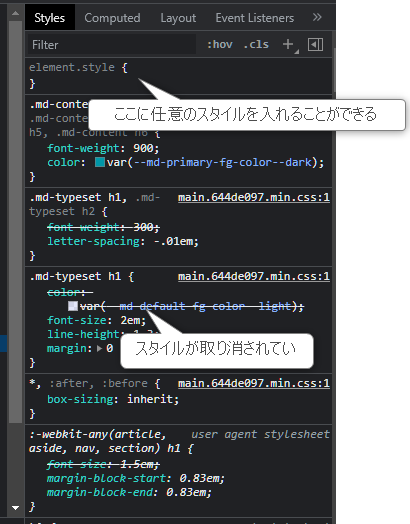

CSS / Sass
筆者: 海老原 賢次（ebi311@gmail.com）
作成日: 2022-04-28
更新履歴:
- 2022-04-28: 新規作成
概要
ここでは、HTML の装飾や体裁を整えるための言語である CSS と、その CSS を効率よく管理するための Sass について説明します。
また、スタイルを使ったレイアウトや色のなどのテクニックについても説明します。
CSS
CSS は、HTML の文書に装飾やレイアウトの指定を行うものです。HTML5 での仕様変更によって、HTML からそれらの要素や属性がなくなり、CSS での記述に一元化されました。
よって、Web アプリケーションを作成するに当たり、CSS の知識は必須となります。
また、セレクタなどの仕様をよく知ることにより、簡単な要件であれば JavaScript に頼らなくても条件に応じて表示を変更することなどができるので、JavaScriptがシンプルになります。
HTML への適用方法
基本的な書き方
CSS の構文は基本的には下記のようになります。
{}の中を入れ子にすることは出来ません。
セレクタについては、下で説明します。
プロパティにはスタイルの種類を指定します。例えばフォントサイズ(font-size) や、背景色(background-color)、枠線(border) などがあります。
詳しくは下記のリファレンスを参照してください。
参考
値は、プロパティごとの値を入れます。ダブルクォーテーションなどで括る必要はありません。
値はプロパティごとに指定方法が変わります。例として、フォントサイズであれば 12pt(pt はポイント)、色であれば redや #fffといった内容になります。枠線は太さと線の種類と色(1px solid red)というように、一度に複数の値を設定できるものもあります。詳しくはリファレンスを参照してください。
サイズや色の値については、後述します。
セレクター
セレクターと言うのは、スタイルの定義を割り当てる要素(タグ)を指定するための条件です。
セレクターは、CSS 以外にも例えばテストプログラムで要素を検索するときにも使います。セレクターをうまく使うと少ないコードで書けるので、覚えておくと良いです。
セレクターの種類
セレクターは、下記の指定ができます。
-
全称セレクター :
*は、すべての要素が対象セレクタ *のようにすると、その子要素すべて、ということになります。この書き方は後述します。 -
要素(タグ)型セレクター :
a,buttonとすると、すべてのその要素に適用されます。 -
クラスセレクター : 要素の
class属性の値を指定します。.targetというように、ドットのあとにクラス名を書きます。
クラスの値はスペース区切りで複数指定することが出来、その中の１つの単語にヒットすれば対象となります。 -
id セレクター : 要素の
id属性の値を指定します。#targetというように、#のあとに ID 名を書きます。
HTML のルール上、id は重複しないので、特定の 1 つの要素に適用されるはずです。 -
属性セレクター : 上のクラス、id 以外の属性とその値が指定されている要素が対象になります。
[属性名=属性値]という指定をします。
属性名だけでも良いですが、その場合は値に関係なく、その属性が指定されていれば、ということになります。 ここの=は、その通り"等しい"、という意味ですが、その他にもいくつか書き方があります。- *= : 値の文字列が含まれている場合に適用される。
- ~= : 値の単語が含まれている場合に適用される。値が単語ごとにスペース区切りで入っていることを想定している。
- ^= : 指定した文字列で始まる場合に適用される。
- $= : 指定した文字列で終わる場合に適用される。
- |= : 値に一致するか、その値のあとにハイフン(-)が続く場合に適用される。
and 条件
セレクタ同士をスペースなしでつなげることで、and の条件となります。
複数のセレクターの指定（or 条件）
複数のセレクターをカンマ(,)区切りで指定することで、それらに同じスタイルを指定することが出来ます。
結合子
結合子とは、他の要素の戸の関連を示します。
例えば、複数のセレクタをスペース区切り（スペースが結合子）で指定することで、親要素を特定することが出来ます。この場合、親要素にはスタイルは適用されません。
また、この親は直上の親だけでなく、上位要素のいずれかに存在するか、ということになります。
直上の親を指定する場合は、>結合子ではさみます。
擬似クラス・疑似要素
擬似クラスとは、セレクタの後ろに:で始まる下記を入れることで、特定の状態のスタイルを指定することが出来るものです。
ここでは、よく使われるものを紹介します。すべてのリストは、上のMDNのサイトで確認してください。
- :hover : マウスカーソルがその要素に乗ったときに適用される
- :active : その要素がクリックされたとき
- :focus : その要素にフォーカスがあたったとき(input 要素など)
- :read-only : その要素が react only の場合(input 要素など)
- :root
: 文書のルート、
<html>要素を指す。 - :nth-child(n), :nth-last-child(n)
:
nには数値が入る。自身が兄弟要素の先頭から n番目、または最後からn番目を示す また、nにoddやevenを入れることができる。それぞれ"奇数"、"偶数"を示す。 - :first-child, :last-chi :自身が兄弟要素の先頭、または最後の要素を示す
疑似要素とは、セレクタのあとに::で始める下記を入れることで、その要素の特定の部分にスタイルをつけることが出来るものです。
ここでは、よく使われるものを紹介します。すべてのリストは、上のMDNのサイトで確認してください。
-
::before, ::after : 要素の前または後に疑似要素を生成します。
contentプロパティで表示する文字を指定でき、そのスタイルを他のプロパティで指定します。
下記の例では、<h1>の前に 赤色で>の文字を表示します。 -
::first-letter : 段落の始めの文字のスタイルを指定できます。段落の字下げのときなどに便利です。
- ::first-line : 段落の始めの行のスタイルを指定できます。
セレクターとプロパティ値が競合するときの採用される条件
複数のスタイルが適用される要素の場合、それぞれのスタイルがマージされたスタイルとなります。
例えば下のような定義で、<a class="link">...</a>という要素の場合、color: redと font-size: 12ptがどちらも適用されます。
では、同じプロパティが指定された場合はどうでしょうか？
この場合は、.linkのほうが勝ちます。これはスタイル書いた順番ではなく、セレクターにはそれぞれスコアが設定されており、その合計によって優先度が変わります。より大きいものが採用されます。
スコアは、より要素の特定が狭いものが高くなる傾向があります。
例えば、要素セレクター は、適用範囲が大きいため低スコア、id セレクターは特定の要素のみに与えられるので高スコア、クラスセレクターはその中間、ということになります。
親要素や兄弟要素、and 条件を指定したときにもそれぞれが加えられるので、計算は複雑です。ですが、それを詳細に理解する必要はありません。スタイルが思ったように適用されないときに、このスコアがあるということを思い出してもらえれば、ブラウザの開発者ツールを利用して対策ができると思います。
ボックス
ボックスとは、HTMLの各要素の領域を示すもので、スタイルでレイアウトなどを操作するには、これを理解しておく必要があります。
ブロック要素とインライン要素
HTMLの要素はボックと呼ばれる ブロック要素とインライン要素、インラインブロック要素があります。これらは CSS で定義されており、ブラウザのデフォルトのスタイルによって要素ごとに値が指定されています。
あくまでもブラウザのでデフォルト値なので、スタイルで変更できます。displayプロパティで、block, inline, inline-blockを指定できます。(displayに指定できる値は他にもあります。flex, gridの章で説明します。)
それぞれ、描画に関して下記の仕様となります。これらはスタイルシートで変更することも出来ます。
- ブロック要素: 基本的に横幅が上の要素いっぱいに広がります。またその前後の要素は、別行に描画されます。
- インライン要素: 行の中に表示されます。前後の要素と改行なしに（前後の要素がボックス要素の場合は開業されます）描画されます。また、width, や height といった一部プロパティが無視されます。
- インラインブロック要素: 基本的にはインライン要素と同じですが、width や height などブロック要素のプロパティが使用できます。
注意
厳密には、HTML5 でブロック要素、インライン要素といった区別はなくなり、コンテンツカテゴリの区分が採用されています。ただ、通常使う場合にはこちらのほうが理解しやすいので、以前の区分で紹介しています。詳しくは下記をご確認ください。
ボックスの構造
ボックスの構造は、他の要素との余白である マージン(margin)、枠線(border)、枠線とその内容の余白(padding)となっています。それぞれに幅を設定することも出来ます。
スタイルの width, heightプロパティは、それぞれ 'content' の領域に適用されます。つまり、margin: 5px, border: 1px, padding: 3px、width: 100px と指定た場合、マージンまでの要素の大きさとしては、100+5+1+3 で、109px となります。
特に問題になりやすいのは、width:100% と指定したときで、ここでの 100% は親要素の width が採用されるので、親要素の content 領域をはみ出してしまいます。
その場合は、box-sizingプロパティの値をborder-boxとすることで、枠線の外側を基準とした幅指定となります。
長さの単位
CSS の margin や padding、border の先の太さなど、長さを指定することが多いです。
長さの単位は様々あり、状況により使い分けが必要です。
ここでは、よく使われるものを紹介します。
- px : ピクセル（1ドット）を表しますが、高密度のディスプレイなどでは異なる場合があるので、利用はなるべく控えたほうが良いです。
- em
: その要素のフォントサイズを '1' としたときのサイズを指定します。
1.2emだと文字の大きさの 1.2 倍ということです。親のスタイルの影響を受けるので、同じ値をうけられるとは限りません。 - rem
: HTMLのルートのフォントサイズを '1' としたときのサイズを指定します。
1.2remだとルートの文字の1.2 倍ということです。つまり親のフォントサイズに影響されないという特徴があります。 - vh, vw
: ビューポートの高さ(vh)または幅(vw)の 1/100 を '1' とした単位です。ビューポートとはブラウザの描画領域です。つまり 100vh とすることでブラウザの描画領域
の高さと同じ長さ、ということです。
% 指定では、親のサイズに左右されますが、これはどこでも同じ値を得ることになります。 - vmin, vmax : vh, vw の小さい方(vnim)または小さい方(vmax)の 1/100 を '1' とした単位です。
単位は他に色々ありますが、これだけ知っていればとりあえず大丈夫です。特に remを基準としてサイズを定義しておけば問題ないでしょう。
擬似的でフローティングなダイアログなどを作成する場合は、vh, vwを使うこともあります。
計算
上の長さの値で四則演算できます。異なる単位でも計算できます。
100 px の 1/3 を表現したいときなどは、33.33333pxという数字ではなく、calc(100px / 3px)と書くことができ、見た目にもわかりやすくなります。
後述するアニメーション関連のプロパティでも使えるので、そのあたりで活用できそうです。
色
CSS での色の値は、いくつか書き方があります。代表的なものを挙げておきます。
<color> - CSS: カスケーディングスタイルシート | MDN
- キーワード
:
red,blueと言った色のキーワードが指定できます。そのままの名前なので、コードを見て何色か分かりやすいです。 指定できるキーワードの一覧は- CSS: カスケーディングスタイルシート | MDN を参照してください。 - 16進数表記
: よく使われる、RGBを16進数で表したものです。
#RGB[A]と#RRGGBB[AA]の2つの書き方ができます。R(赤)G(緑)B(青)A(透明度) それぞれは、0~F までの値で、Aは任意です。cyanは、#0ff,#00ffffと同じです。 - rgb[a]関数
:
rgb(r，g, b),rgba(r, g, b, a)関数を使用できます。r,g,b,a はそれぞれ、0~255 または 0%~100% で指定します。数値が利用できるので、calcも使用できます。 - hsl[a]関数
:
hsl(h, s, l),hsla(h, s, l, a)関数を使用できます。h は色相、s は彩度、l は輝度 を表します。よく、グラフィックソフトでも目にすることがあるかと思います。ある色の反転した色や背景色に対して読みやすい色の文字色を求めたりするときに使います。ライトモード、ダークモードを切り替えるときなどに便利です。HLS色空間 - Wikipedia
変数(カスタムプロパティ)
CSS では変数が使えます。変数にはいろいろなタイプの値を入れることが出来ます。数値、パーセント、文字、色 などです。
変数は --で始まる任意の文字列とします。名前は、慣習的にケバブケースを使用するので、それに習うと良いでしょう。
ページ全体で使うグローバルな変数は、:root {}に入れておくと良いでしょう。
使用する場合は、var()関数を利用します。
また、変数は特定の範囲において、上書きすることが出来ます。下の例では、<a></a>の文字色は赤ですが、クラス名が .specialの要素配下の<a></a>は青色になります。
ページで使用する色は限定したほうが良いので、この変数を使ってパレットを作成し、色はそこから採用するようにするのが良いでしょう。
flex, grid でレイアウトを定義する
ページのレイアウトを定義するのに、古くは<table>や CSS の floatなどを使用してきましたが、現在ではレイアウトのための flexや gridの機能ができたので、それを使います。これらを使うことで、画面サイズに合わせて変化する、レスポンシブデザインも作りやすくなります。
プロパティ displayの値には、flex, gridが使用できます。どちらもレイアウトを整えるために使用します。
どちらも似たような機能ですが、違いを把握することで、それぞれの場面にあった活用ができます。
参考
table や float を使ってレイアウトしないようにしましょう。-> アンチパターン
flex
flexを指定した要素はブロック要素として振る舞います。またその直下の要素は、横並び または 縦並び に整列します。
さらに、その並びや伸長、折り返しなどが出来ます。
使い方は下記サイトが詳しいので参考にしてください。
もう迷わない！CSS Flexboxの使い方を徹底解説 | Web Design Trends
CSS Flexbox 各プロパティの使い方を詳しく解説 | コリス
grid
gridを指定した要素はブロック要素として振る舞います。またその直下の要素は、親で指定した行、列の数に合わせてグリッド状に配置されます。
また、子要素ごとに縦横いくつ分のグリッドを専有するかを決めることも出来ます。エクセルでのセル結合に似た使い方ができます。
使い方は下記サイトが詳しいので参考にしてください。
一番分かりやすいCSS Grid Layoutの使い方ガイド | Web Design Trends
5分で完璧に分かる！CSS Gridの基本的な使い方を解説 | コリス
使い分け
flex、gridどちらだけでも様々なレイアウトに対応することができるでしょう。しかし、それぞれの特徴を踏まえて使い分けることで、効率的に
gridは、ページ全体のレイアウトや横や縦の数が固定であるときに使用すると良いでしょう。
flexは、ページヘッダなど要素を左右に振ったり、画面サイズに合わせて折り返す(wrap)する必要があるときなどに使うと良いです。
flexは 一次元的、gridは 二次元的 とも言われます。
インポート
@importを利用することで、他のCSSファイルを読み込むことが出来ます。１ファイルでは長大なコードのになるときなど、用途や適用範囲に合わせて分割するときなど便利です。
ただし、import はそれ毎にブラウザにダウンロードするので、数が多いとページの読み込み時に時間がかかる可能性があります。
後述する Sass の import 機能では、事前ビルドで１つのファイルにまとめることができるので、それを利用するのが良いでしょう。
メディアタイプ
@mediaを使用することで、ブラウザのサイズや印刷時などに合わせてスタイルを変化させることが出来ます。
これを利用することで、モバイル用画面や印刷時のレイアウトを定義することが出来ます。
Note
CSSフレームワークのTailwind CSSを利用することで、画面サイズに合わせたスタイルの切り替えが非常に楽になります。
これは、別のページで説明します。
デバッグ
スタイルがうまくあたっていない、どんなスタイルを当てるとよいか試行錯誤したい、といった場合、ブラウザの開発者ツールを使用すると良いでしょう。
ここでは、Chrome を前提とします。
ブラウザで F12 キーを押すと、開発者ツールが起動します。
特定の要素のスタイルを調べる
調べたい要素を選択します。
style の欄に、適用されているスタイルの一覧が表示されます。

取り消し線が引かれているものは、優先度が高いほかのスタイルによって上書きされていることを示しています。
element.style のところに、スタイルを追加できるので、そこでどのように変化するのかを確認することも出来ます。
Computed を見ると、スタイルごとの値と、何によって定義され、何が優先されているか、などがわかります。
flexや gridの状態を調べる
HTML 内の [flex], [grid] のボタンを押すことで、ブラウザ上でその枠線を表示することが出来ます。
今までは、一時的に CSS の枠線などを定義して確認していましが、もうそんな必要はありません。
アニメーション
JavaScript を使用しなくても、transitionや animationを使用することで CSS だけでアニメーションを実現できます。
アニメーションは、UIには必須ではないですが、アニメーション化することで注意を向けさせたり、操作の説明、状態の変化を利用者が把握しやすくなるなど、ユーザビリティを向上させる効果を出すことが出来ます。
例えば、ボタンをクリックしたときに、短いアニメーションで色を替えることで、クリックしたことを反応としてユーザーに伝えることができるでしょう。
また、アコーディオンのようなUIでも、瞬時にカテゴリが開くのではなく、アニメーションにすることでユーザーが開いたことを認識しやすくなります。
意味なく多用するのではなく、上記のような効果を狙って使うようにしましょう。
参考
transition
transitionは、2つの状態で別なスタイルを定義し、その間の状態を自動的に補完することで、アニメーションを実現します。2つのスタイルを用意するだけなので、比較的簡単に書くことが出来ます。
animation
animationは、transitionより複雑なアニメーションの定義ができます。
@keyframeでタイミング（アニメーションが n% 進んだとき）ごとの状態を定義し、それを animationプロパティに適用します。
無限にアニメーションを繰り返すこともできるので、プログレスバーやスピナーも実現できます。
See the Pen css animation by 海老原 賢次 (@ebi311) on CodePen.
Sass (scss)
Webサイトが大きくなってくると、CSS が大変煩雑なものになってしまいます。例えば、クラスの親子関係がバラバラに定義されていたり、1つのファイルで書いていると、長大になりすぎる、などです。
Sass は、スタイルをより管理しやすいコードで書くことが出来ます。そのままでは、ブラウザで使えないので、CSS に変換してデプロイする、ということになります。
Warning
CSS の仕様が年々アップデートされ、Sassの仕様を取り込んでいっています。下で説明している、ネストや変数などの機能もすでにあり、メジャーなブラウザは積極的に新しい仕様に対応しています。
そのことから、Sass を必要とする機会は、今後減っていくでしょう。無理に学習することはありません。CSSの最新仕様をキャッチアップしておきましょう。
Sass の記法
ちょっとややこしいのですが、Sass には sass 記法と、scss 記法があります。sass 記法は ruby のようなインデント形式の書き方で、scss は CSS を拡張した書き方です。
どちらも同じことができるのですが、CSS に慣れ親しんでする人が多いため、ここでは scss 記法で説明します。
Sass の導入
npm を導入していれば、yarn add sassでプロジェクトディレクトリに導入できます。また、PCに入れてどこでも使いたい場合は、yarn global add sassとします。
入れ子の定義
Sass での最も特徴であり、最大の目的がこの入れ子での定義です。
CSS のセレクタでは、ある要素の子孫の要素の定義はスペース区切りで書きます。子孫を増やしたり、子孫の更に子孫があったりすると、下記のようになります。
こういったものが増えていくと、.oyaにどんなものが割あたっているのか分かりづらくなります。
scss ではこのように書くことが出来ます。
入れ子にすることで、親子関係がわかりやすくなります。
>や +といった結合子も書くことが出来ます。
また、:hoverや 複数のセレクタの条件を付ける場合は、下記のようにかけます。
変数
CSS でも変数は使えますが、Sass は key-value や 配列が使用できます。
@extends
変数と異なり、スタイルのセットを変数のように置くことが出来ます。%で始まる名前とします。
適用する箇所で、@extendを利用します。
下記のような CSS が出力されます。
@mixin
@mixinを使うと、関数を作成できスタイルのセットを返すことが出来ます。
引数には、プロパティの値を定義することが出来ます。
利用したいところで、@includeを使います。
下記の CSS が出力されます。
@extends と @mixin の使い分け
@extends と @mixin はよく似ています。使い分けを悩むところですが、@extendsは、%で指定したスタイルが別に出力されるので、やや混乱を招くことになる可能性があります。また引数が使えるという点でも、@mixinを使用するほうが望ましいと思います。
色の計算
CSS では、rgb[a]()や hsl[a]()の関数が使えますが、Sassではそれに加えて下記の関数があります。
- mix: 2つの色の中間色を求める
- lighten: 指定した色から輝度を上げる
- darken: 指定した色から輝度を下げる
- saturate: 指定した色から彩度を上げる
- desaturate: 指定した色から彩度を下げる
- grayscale: 指定した色をグレースケールにする
- complement: 指定した色の補色(色相環の反対の色)を求める
- invert: 指定した色を反転色を求める
補色 と 半転職
レスポンシブ・デザイン
Webページは原則として、PCのみではなく、スマートフォンなどのモバイル機器、正確に言うと、スクリーンサイズが小さいものでの閲覧、操作を検討すべきです。
PC用に作られたWebページを、あとからモバイル機器に合わせるのは非常に困難を伴います。
ブラウザのサイズに合わせて、レイアウトを変えるなどの必要がありますが、殆どはCSSの @media で対応できます。
https://developer.mozilla.org/ja/docs/Web/CSS/@media
@media では、ブラウザのスクリーンサイズとしてmax-width, min-width で条件を指定でき、その条件のみで有効になるスタイルを定義できます。
また、Tailwind CSS などのCSSフレームワークを使用することで、その実装が効率的にできます。
https://tailwindcss.com/
アンチパターン
<table> や float でレイアウトする
CSS3では、レイアウトを整えるためのflexやgridが用意されていますので、これらを使用します。
FlexboxとCSS Gridの使い分け方、よく見かけるUIコンポーネントをFlexboxとGridで実装するテクニックのまとめ | コリス
1ファイルにCSSを詰め込む
規模が大きくなると、ファイルが巨大になり、メンテナンス性が絶望的に悪くなります。
@importや、Sass などの外部ツールを利用して、目的や用途に合わせて適切に分割します。
React などのコンポーネント・システムを利用する場合は、コンポーネントごとに emotionやstyled-componentsなどの css in js や、css modules を利用して、スコープされたスタイルを実現します。
多重の継承を利用する
CSS は親のスタイルを継承しますが、継承するものとしないものなどがあったり、タグが多層になっていたりすると、どのスタイルがどこであたっているのか、などが分かりづらくなります。
クラス名でそのスコープを指定するように命名規則を作成して、それに従うようにすると良いです。BEM — Block Element Modifier というガイドラインがあるので、それに従うと良いです。
しかし、その命名規則に従って作られる保証がない、チェックがしづらい、ということもあります。上で述べた css in js や css modules を採用すべきです。